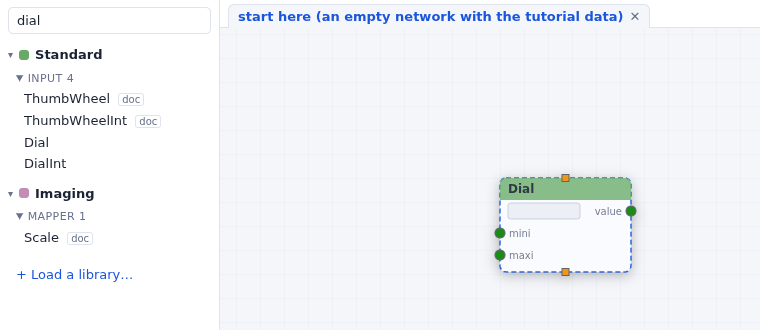
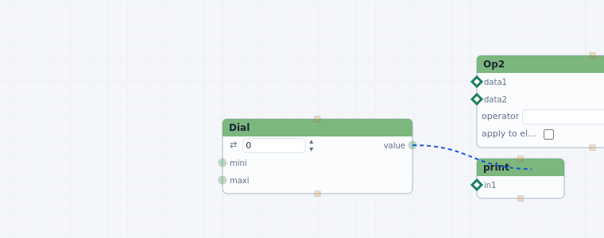
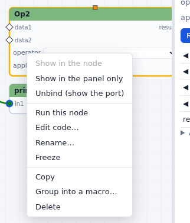
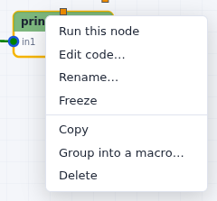
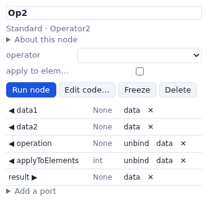
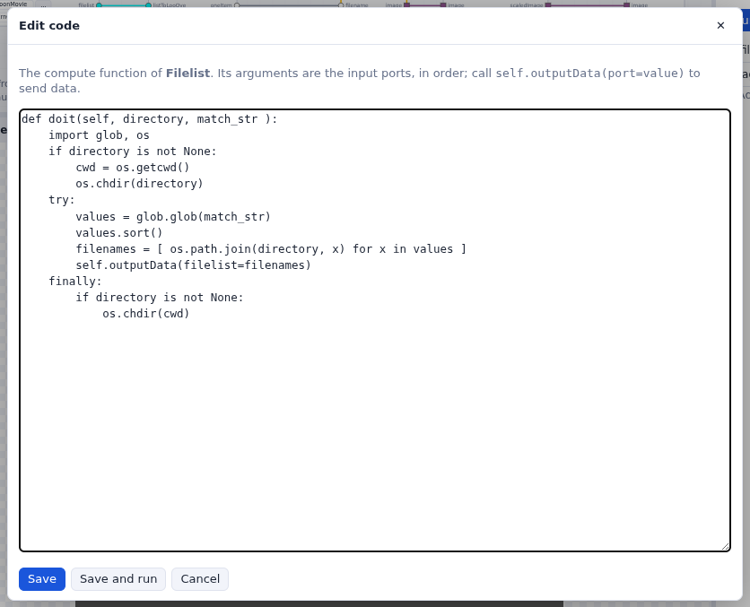

Building a network
Add nodes, connect their ports, set their widgets, read and change their code, and group them into macros.
Add a node
Drag a node from the libraries on the left onto the network, or double-click it in the list. While you drag, the node itself is drawn under the cursor, with its ports and widgets, at the network's zoom and where it will land: dimmed over the libraries, solid over the network. To find a node, type part of its name, or of its category's, in Find a node; from three letters on, the search also looks in the nodes' documentation, and a node found there is marked doc. Hovering over a node in the list shows what it does. The search covers the loaded libraries.

Only the Standard library is loaded when the server starts. Libraries… loads the others (see Node libraries); opening a network or an example loads the libraries it uses.
Ports and data types
A node's inputs are on its left edge and its outputs on its right edge, one row each. The shape and color of a port show the type of data it takes or gives (float, int, string, list, image, geometry, molecule…); hovering over a port shows its name, its type, and whether it is optional. An input given a widget shows the widget on its row instead of a port icon.
A long port name is shortened in the node, from the end of its name or as an abbreviation (instanceMatrices shows as instMat): hovering over it shows the full name, and the parameter column shows it in full.
Two small squares are special ports: the one on the top edge (runNode) runs the node
when a connection brings anything to it, and the one on the bottom edge (trigger)
runs the nodes connected to it after this one.
Connect
Drag from an output port to an input port. While you drag, the inputs that can take the data light up, and the others dim. An input that takes a single connection and already has one is dimmed too: disconnect it first.

value. The inputs of print and Op2 accept a
float.To remove a connection, right-click it and choose Delete connection, or click it and press Delete. Right-clicking a port offers Show data (the value it holds now) and Disconnect.
Widgets
An input with a widget gets its value from the widget, shown on its row in the node or in the parameter column. Right-click a widget for its menu:


- Show in the node / Show in the panel only moves the widget between the node and the parameter column.
- Unbind (show the port) removes the widget, so that the input becomes a port another node can feed. Right-click that port and choose Rebind widget to get the widget back. Some widgets are part of their node (a Dial's dial) and cannot be unbound.
- Wider / Narrower / Automatic width: a widget shown in its node is as wide as its value needs (four letters for a PDB id, a few digits for a small integer), so that nodes stay narrow. These entries make it wider or narrower when that is too short; the width is saved with the network.
Numbers. Scroll over a number (mouse wheel, or two fingers on a trackpad) to change it step by step: Shift makes the steps 10 times finer, Alt/Option 10 times coarser. Drag its ⇄ handle to change it continuously, or use its ▲▼ arrows. Edit > Reverse the scrolling direction on numbers changes which way the wheel goes.
The parameter column

Click a node to select it. The column on the right shows its widgets, Run node, Edit code…, Freeze (a frozen node does not run, and stops the data there), its ports, and Add a port. Shift-click or Shift-drag selects several nodes; the column then offers to group or delete them.
A node's code
Every node is a Python function you can read and change. Double-click a node, or use Edit code…:

values.sort()). The arguments are the input ports, in order;
self.outputData(filelist=filenames) sends a value out of the filelist
port. Save and run keeps the new code and runs the node.A changed node keeps its code in the network file. Writing your own nodes
explains the function, the ports and returning 'Stop'.
Select, move, copy
| to | do |
|---|---|
| select a node | click it |
| select several | Shift-drag a rectangle on the background, or Shift-click nodes |
| move | drag a node (the selected nodes move together) |
| pan, zoom | drag the background; mouse wheel |
| copy, paste, delete | Ctrl-C, Ctrl-V, Delete (or the Edit menu) |
| see the whole network | f, or Edit > Fit the network in view |
| tidy it | Edit > Arrange the nodes from left to right |
Macros
Select some nodes and choose Group into a macro… (node menu, Edit menu or the parameter column): they become one node, and the connections that crossed the group's edge become its ports. Double-click the macro node to open its network in a tab:

A network keeps the macro tabs you opened, and the one in front, when you switch to another network and back (see moving between networks). The ✕ on a macro's tab closes the tab, not the macro.
Inside a macro, connecting a node to the new port of input Ports or output
Ports adds a port to the macro. Explode macro puts its nodes back in the network around
it. Library macros (Icosahedral1, IcosCage, UTiso…) open the same way.